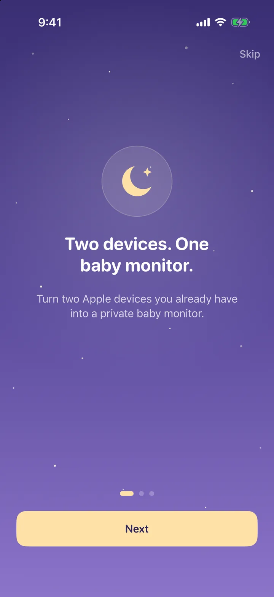
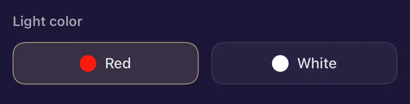
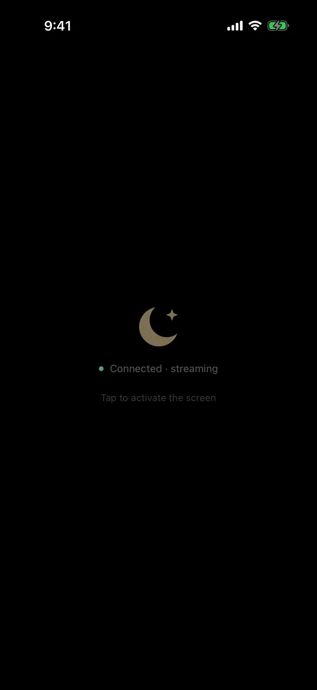
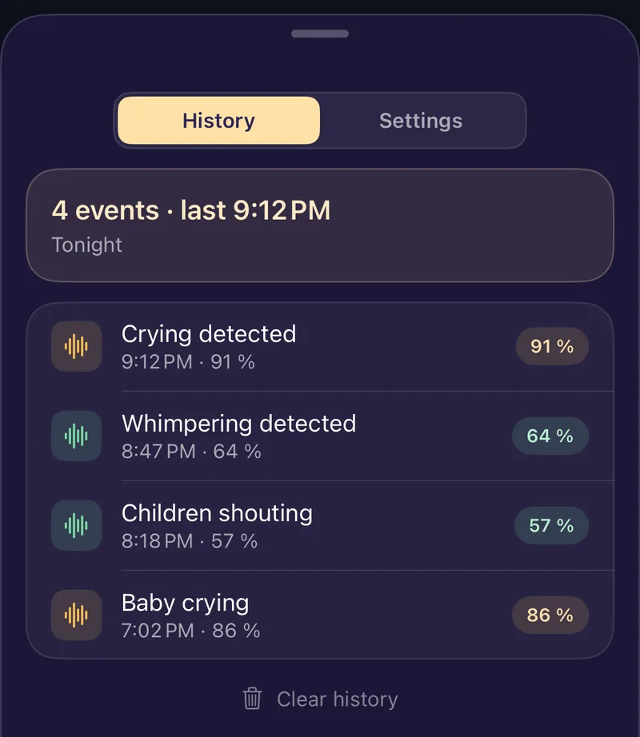
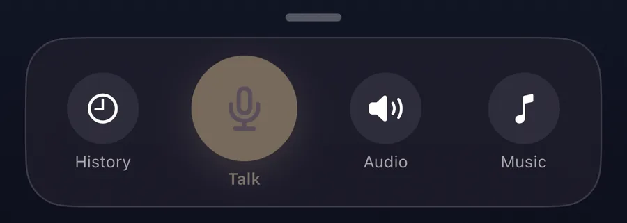
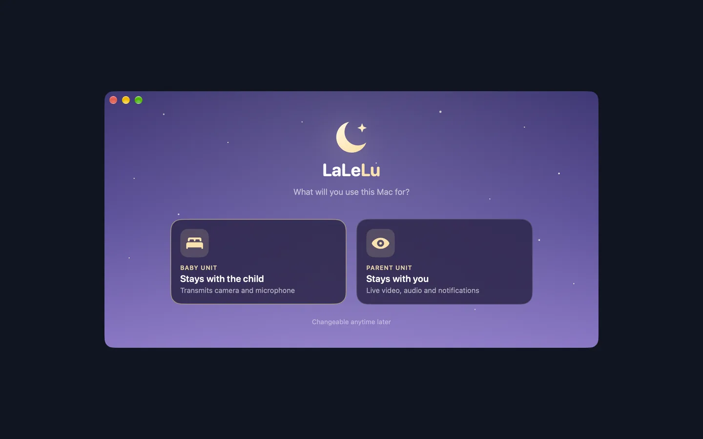
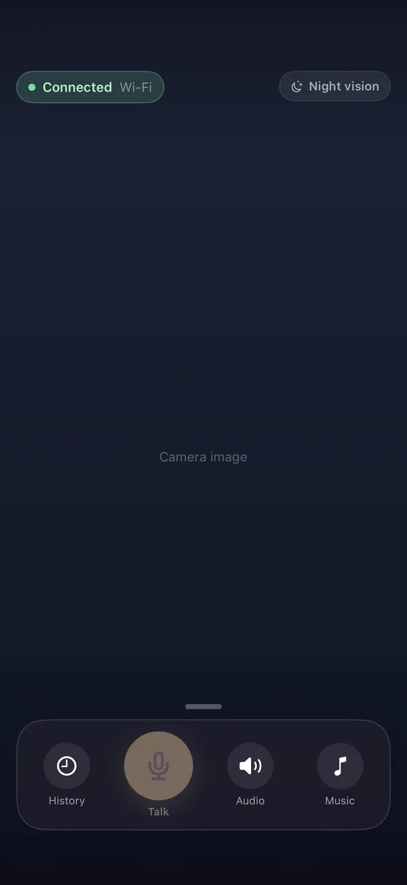

Baby monitor app. Seen only by you.
LaLeLu turns your iPhone, iPad and Mac into a private baby monitor with camera. Free, no subscription, no account. End-to-end encrypted.
For iPhone, iPad and Mac. Two Apple devices required.

- Free – 0 €
- No subscription
- No account
- No ads
- No tracking
Camera baby monitor.
Every feature free.
One device stays in the nursery as the Baby Unit, the other becomes the Parent Unit. Mix iPhone, iPad and Mac as you like.
- Live video and soundOn Wi-Fi and on the go over mobile data.
- Night visionThe Baby Unit’s screen becomes a lamp.
- On-device crying alertsAs a push notification, even when locked.
- Talk-backPush-to-talk, without getting up.
- Sleep sounds with timerNoise, rain and ocean.
- Activity historyStays local on your device.
Lights out.
Night vision on.
The Baby Unit stays in the dark nursery. In night mode its screen is almost black while the stream keeps running.
With night vision its screen becomes a gentle lamp, red or white. Red light tends to disturb sleep less.
You can switch night vision on and off from your iPhone too, without going into the room.


Your baby cries.
Your iPhone knows.
Crying detection runs entirely on the Baby Unit, using Apple SoundAnalysis. When it hears crying or coughing, you get a push notification, even with the screen locked. No audio goes to the cloud for it.

A quiet word.
Without getting up.
Hold “Talk” and your voice is in the nursery. Let go, and it is quiet again.

Try it: press and hold “Talk”.
Noise on.
Timer running.
White, pink and brown noise, plus rain and ocean. You start the sounds from your iPhone.
The timer runs on the Baby Unit itself and fades the sound out gently, even if your iPhone loses the connection in between.
Choose 15, 30, 45 or 60 minutes, or no end.
Your old Mac
has a new job.
Put it in the nursery: with its built-in or a connected camera it becomes the Baby Unit. Your iPhone is the Parent Unit.


1–2 secondsThat is how fast it usually connects at home. On the go over mobile data, often within a few seconds.
Mix freelyiPhone, iPad or Mac in the nursery, iPhone or iPad with you. An old iPhone is enough as the Baby Unit.
For both parentsSeveral Parent Units can be connected at once. More in the guide: use your Mac as a baby monitor.
Baby monitor privacy:
no one else watches.
- End-to-end encrypted.
- Video and sound travel directly between your devices (WebRTC, DTLS-SRTP). Only devices you paired yourself can see the picture.
- Never recorded.
- Video and sound are not stored on any server or permanently in the app.
- Detection on the device.
- Sound analysis happens locally with Apple SoundAnalysis. No audio is sent to us.
- No account, no ads, no tracking.
- Pairing only needs the iCloud access you already have.
To be honest: LaLeLu uses Apple (iCloud, push) and Cloudflare to broker the connection and the alert. What is stored, and for how long, is described in full in the privacy notice.
Baby monitor with no subscription and no account
Many baby monitor apps ask for a subscription, a one-time purchase per device or an account of their own. LaLeLu does not.
| Criterion | LaLeLu | Typical baby monitor apps |
|---|---|---|
| Price | Free, for all devices | often a subscription or a purchase per platform |
| Account / sign-up | None, only your existing iCloud access for pairing | often an own account is required |
| Ads and tracking | No ads, no tracking SDKs | sometimes ads or analytics |
| Video and sound | End-to-end encrypted, never recorded | sometimes stored or processed on cloud servers |
| Crying detection | On the device, no audio to the cloud | sometimes just a volume threshold or cloud analysis |
| Devices | iPhone, iPad and Mac, mix freely | often a single platform |
The comparison describes general market differences, not any single app.
Set up in a few minutes
- Get.Install LaLeLu on both devices from the App Store.
- Choose.Choose “Baby Unit” on the device in the nursery and “Parent Unit” on the other.
- Pair.Pair them with a link or QR code. Done.
Baby monitor app: frequently asked questions
Is this baby monitor app really free, with no subscription?
Yes. LaLeLu is a free baby monitor app with no subscription, no ads and no paywalled features. There is no trial that runs out.
Do I need an account to use LaLeLu?
No. LaLeLu has no account of its own and no sign-up. To pair your two devices once, the app uses the iCloud access you already have on your iPhone, iPad or Mac.
Is video or audio recorded or stored?
No. Video and sound are sent live, end-to-end encrypted (WebRTC, DTLS-SRTP), directly between your devices and are not recorded on any server or in the app. If a direct connection is not possible, the still-encrypted stream goes through a Cloudflare relay that cannot decrypt it.
Which devices do I need for a baby monitor with camera?
Two Apple devices: one stays in the nursery as the Baby Unit (iPhone, iPad or Mac with camera and microphone), the other is the Parent Unit (iPhone or iPad). An old iPhone is enough as the Baby Unit. Android is not supported.
Can I use my Mac as a baby monitor?
Yes. The Mac app works as the Baby Unit using the built-in or a connected camera and the microphone. It stays in the nursery while your iPhone is the Parent Unit.
Does it work away from home, over mobile data?
Yes. It connects on the same Wi-Fi and also over mobile data or other networks. Both devices need an internet connection. At home the connection usually takes one to two seconds, on the go often a few seconds.
How does the crying detection work?
Sound detection runs entirely on the Baby Unit using Apple SoundAnalysis. No audio is sent to the cloud for analysis and nothing is collected for training. When the app hears crying or coughing, you get a notification.
Do I get the alert when my iPhone is locked?
Yes. The alert arrives as a push notification even with the screen locked. Allow notifications for LaLeLu in your iPhone settings.
How do I pair the Baby Unit and the Parent Unit?
On the baby device you create a pairing link or QR code and open or scan it on the parent device. It takes a few minutes. The link is the key to the pairing, so only share it with people you trust.
Can several Parent Units be connected at once?
Yes. Several Parent Units can be connected at the same time so both parents stay informed, even with different Apple IDs.
Help & support
Questions, feedback or help? Write directly to the developer — a human replies: moritz.wolf@a1.net. In the app you will also find “Report a Problem / Feedback”.
Your baby monitor is already in your pocket.
Download LaLeLu for free and set up your private baby monitor in minutes.
Get it free on the App Store